GAMES 101 L07-Shading 1 + L08-Shading 2 + L09-Shading 3 (illumination, shading 着色, graphics pipeline, and texture mapping)
Shading - the process of applying a material to an object
A Simple Shading Model (Blinn-Phong Reflectance Model)
Shading is local
Compute light reflected toward camera at a spacific shading point.
Inputs:
- Viewer direction, v
- Surface normal, n
- Light direction, l (for each of many lights)
- Surface parameters(color, shininess, …)
Note:
- v, n, l are all unit vectors.
- shading != shadow. No shadow will be generated.
Diffuse Reflection
- Light is scattered uniformly in all directions
- Surface color is the same for all viewing directions
The amount of light (energy) a shading point gets depends on:
- The angle between l and n.
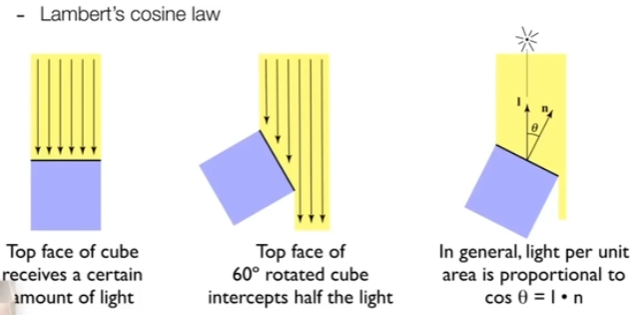 - Distance from point source of light.
(the law of conservation of energy)
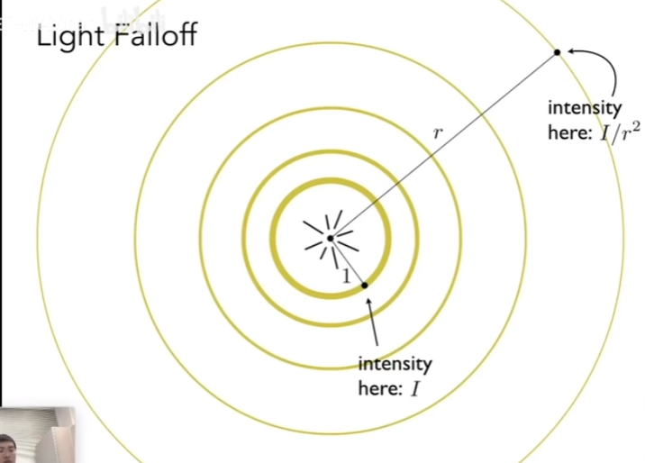
So, the equation for diffusion reflection should be as:
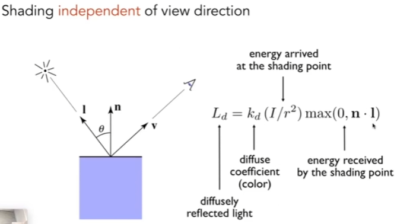
If = 1, all energy will be reflected. If = 0, all energy will be absorbed (no evergy reflected, black).
Specular term (高光项)
- Intensity depends on view direction.
- Bright near mirror reflection direction.
If the view direction is close to the mirror reflection direction, we get the specular term.
Here, the Blinn-Phong convert “V close to mirror direction” to “half vector near normal” for calculation convenience. That is to say, to check if we can see the specular term, we just need to measure how “near” unit vectors are by dot product.
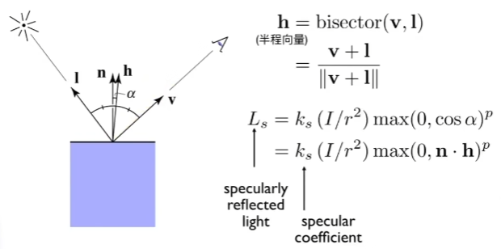
Use exponent p because specular can be seen only when the unit vectors are close enough (p can be 100 - 200 in practice).
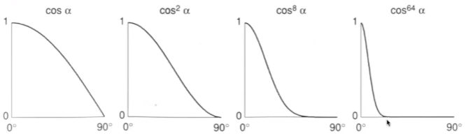
Ambient term (环境光)
- Shading that does not depend on anything
- Add constant color to account for disregarded illumination and fill in black shadows
- This is approximate / fake!
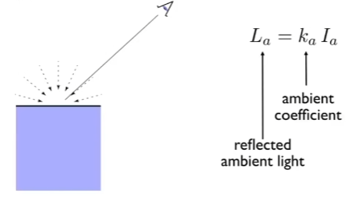
Summary
L (Blinn-Phong reflection) =
Shading Frequencies
- Flat shading
- Triangle face is flat, so one normal vector
- Not good for smooth surfaces
- Gouraud shading
- Interpolate colors from vertices (三角形顶点) across triangle
- Each vertex has anormal vector
- Phong shading
- Interpolate normal vectors across each triangle
- Compute full shading model at each pixel
- Not the Blinn-Phong Reflectance Model
In fact, although usually Phong shading provides better shading effect, it not always works. The shading effect is also affected by the number of faces. If there are more smaller faces, flat shading can also provide good effect (see below).
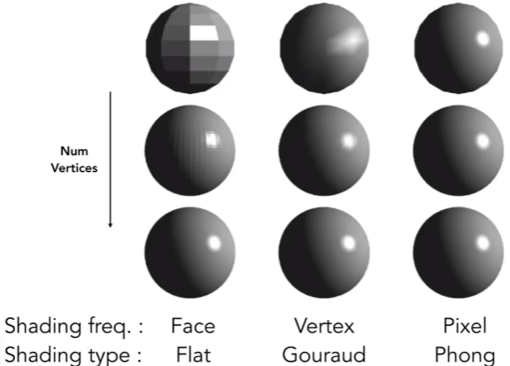
Methods
- How to define / calculate per-vertex normal vector?
- Best to get vertex normals fromthe underlying geometry, e.g. consider a sphere
- Otherwise have to infer vertex normals from triangle faces
Simple scheme: average surrounding face normals
Improved scheme: weighted average surround face normals considering face areas
- How to define / calculate per-pixel normal vector?
- Barycentric interpolation (introducing soon) of vertex normals
- Normalize the interpolated directions
Graphics (Real-time Rendering) Pipeline
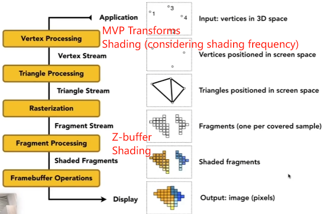
Shader program (着色器)
- Program vertex and fragment processing stages.
- Describe operation on a single vertex (or fragment).
- Shader function executesonce per fragment.
- Outputs color of surfaceat the current fragment’s screen sample position.
GPUs - Graphics Pipeline Implementation
Specialized processors for executing graphics pipeline computations.
Texture Mapping
(think of in map progection in GIS)
Each triangle vertex is assigned a texture coordinate (u, v).
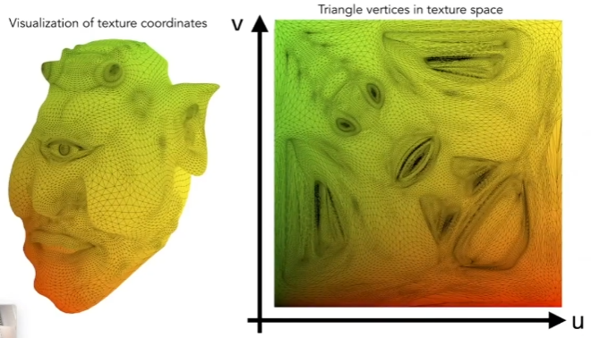
u and v are always ranged in [0, 1]
Texture can be used multiple times, so designing tilable texture is important.
Interpolation Across Triangles: Barycentric Coordinates (重心坐标)
- Why do we want to interpolate?
- Specify values at vertices
- Obtain smoothly varying values across triangles
- What do we want to interpolate?
- Texture coordinates, colors, normal vectors, …(any attribute)
Barycentric Coordinates
Definition
It defines a coordinate system to locate points with triangle vertices. If all coordinates are positive, the point must be inside the triangle.
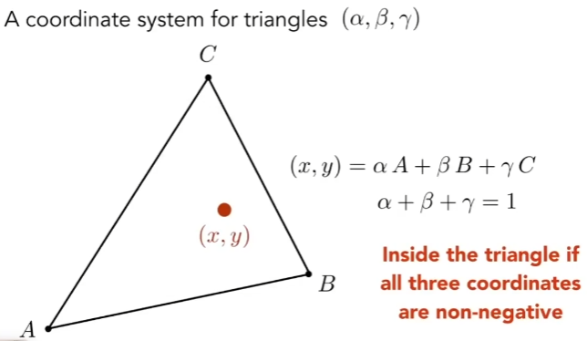
And so, intuitively we can get the representations of each vertex.
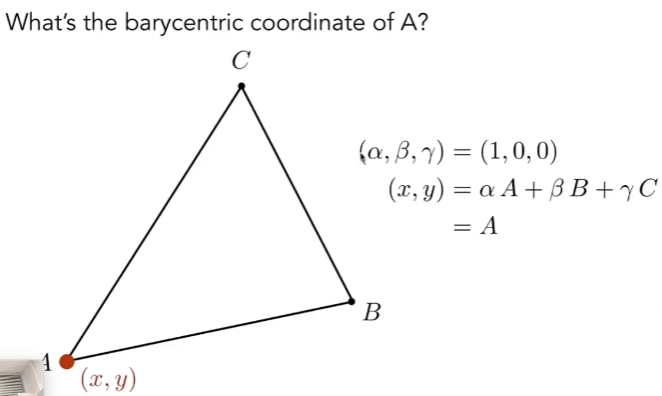
Calculation
Each coordinate can be calculated based on the area of the triangle corresponding to each vertex.
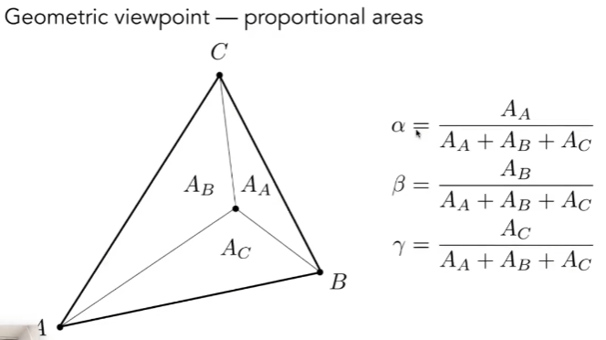
And then if the three inside triangles’ areas are equivalent, we get the centroid of the triangle, where the coordinate is .
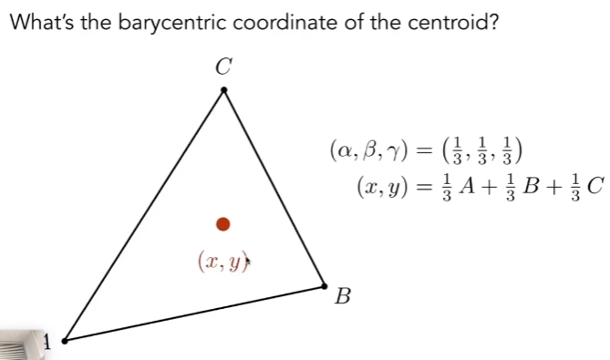
Also, we can calculate the barycentric coordinate for any point. No need to remember the equation.
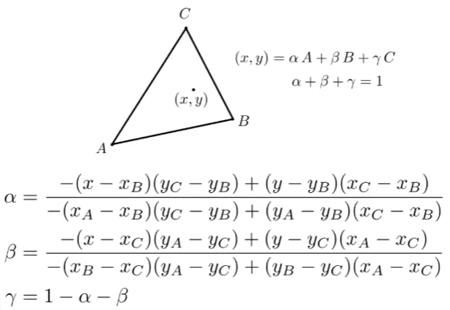
Interpolation
Finally, interpolate any attribute based on barycentric coordinates.
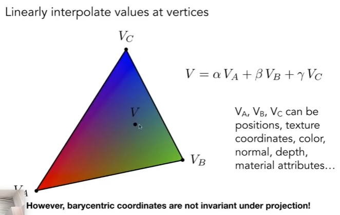
Note: Barycentric coordinates are not invariant under projection, so if we need to perform interpolation for 3d objects attributes, we should use 3d coordinates of the triangle vertices. For example, when interpolating z values, since the triangles have been projected onto 2d screen, we need to perform an inverse transform to get the 3d coordinates again and do the calculation.
Applying Texture
Simpie Texture Mapping: Diffuse Color
Usually a pixel’s center
1 | |
Texture Magnification
What if the texture is too small?
Texture magnification occurs when a texture image is stretched over a surface, and the texture’s resolution is smaller than the resolution of the rendered object. This means there are fewer texels (texture pixels) in the texture than screen pixels in the rendered object. As a result, the rendering process must decide how to fill in the extra pixel information for the surface.
Key Problems in Texture Magnification
-
Pixel-Texel Mapping:
When the screen space is sampled, each pixel may correspond to a fractional texel or may span multiple texels.
Since texels are discrete, this results in gaps or blocky artifacts. -
Artifacts:
Pixelation: The texture can appear blocky if texels are simply enlarged to fill multiple screen pixels (nearest-neighbor interpolation).
Blurriness: Using linear filtering may smooth the texture too much, losing detail.
Solutions
-
Bilinear Filtering
- Description:
- Interpolates between the colors of the four nearest texels to compute a smooth color.
- Advantages:
- Reduces blockiness and provides smoother results.
- Disadvantages: - Blurs the texture, especially when magnified a lot.
- Description:
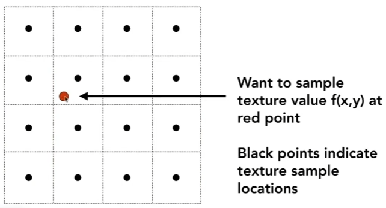
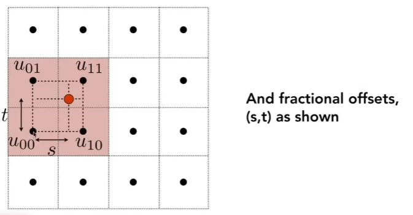
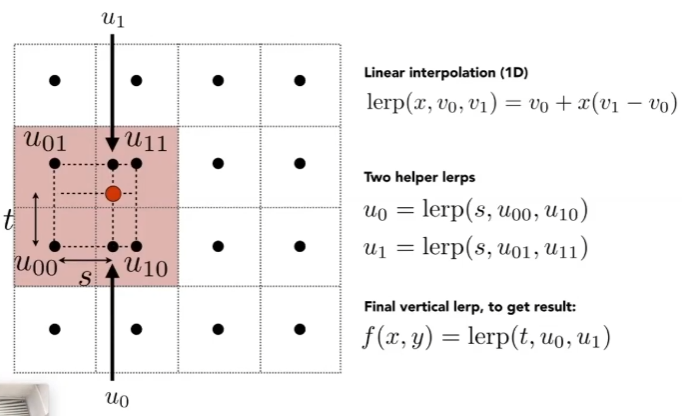
- Bicubic Filtering
- Description:
- Uses more neighboring texels (16 or more) and applies cubic interpolation for smoother transitions.
- Advantages:
- Produces high-quality results with less blurriness.
- Disadvantages:
- More computationally expensive.
- Description:
Texture Minification
What if the texture is too large?
When the texture is too large (i.e., the resolution of the texture is much higher than the resolution of the rendered object on the screen), the graphics pipeline must handle texture minification, where multiple texels map to a single screen pixel.
Problems with Large Textures
-
Information Loss:
Many texels contribute to the color of a single screen pixel, leading to a loss of detail.
Without proper filtering, this can result in aliasing artifacts, such as shimmering or moiré patterns, especially when the camera moves or rotates. -
Memory and Performance:
High-resolution textures require significant memory and processing power.
Sampling and filtering large textures for every pixel can be computationally expensive.
Solution
-
Mipmapping (allows fast, approximate, square range queries)
-
Description:
- Mipmaps are precomputed, downscaled versions of the original texture, stored in a chain.
For example, if the original texture is 1024×1024, mipmaps will include textures of size 512×512, 256×256, 128×128, and so on, down to 1×1.
During rendering, the GPU selects the appropriate mipmap level based on the distance or size of the object on screen.
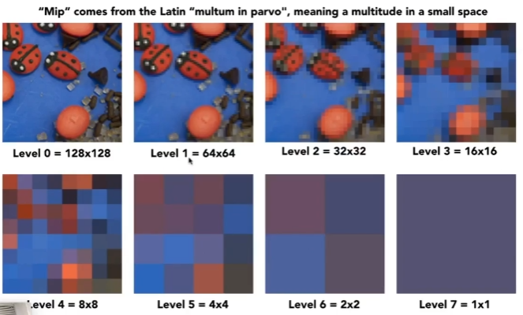
- Mipmaps are precomputed, downscaled versions of the original texture, stored in a chain.
-
Advantages:
- Reduces aliasing by using appropriately sized textures for minification.
Improves performance by avoiding sampling from unnecessarily high-resolution textures.
- Reduces aliasing by using appropriately sized textures for minification.
-
Disadvantages:
- Requires additional memory to store mipmaps (about 33% extra because every next level’s required memory is 1/4 of the last level).
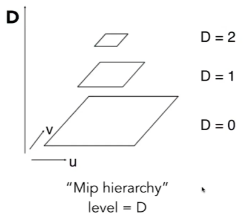
- Requires additional memory to store mipmaps (about 33% extra because every next level’s required memory is 1/4 of the last level).
-
Gradient Calculation for Level Selection:
In the left part of the figure below, the texture space (u, v) is mapped to the screen space (x, y) using derivatives like du/dx, du/dy, etc. Here, du/dx, du/dy, dv/dx, and dv/dy are partial derivatives that represent the rate of change of the texture coordinates (u, v) with respect to screen space coordinates (x, y). For example, du/dx is the rate at which the u-coordinate (horizontal texture coordinate) changes as you move horizontally (x) in the screen space. Large derivatives (e.g., ∣du/dx∣ or ∣dv/dy∣) mean many texels map to one screen pixel, indicating minification.
The Lod (Level of Detail) value D is determined based on the maximum gradient L. L represents how many texels (texture pixels) map to a single screen pixel. A higher L means significant minification, so lower-resolution mipmaps are used to approximate the texture. : Determines which mipmap level to use for sampling.
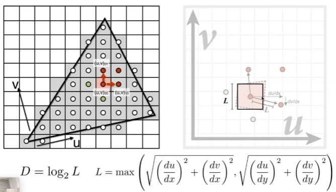 -
Bilinear Filtering Within Levels:
In each mipmap level (e.g., Level D or D+1), bilinear interpolation is applied. This means the four nearest texels in the mipmap contribute to the color of the pixel on the screen.
Trilinear Interpolation Across Levels:
If D is not an integer, the rendering system performs linear interpolation between two mipmap levels (e.g., D and D+1). The final color is a weighted average of the bilinear results from both mipmap levels.
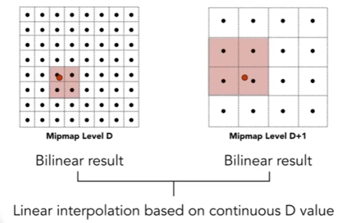
-
-
Anisotropic Filtering (各向异性过滤)
- Description:
Mipmap can only do square range queries, but anisotropic filtering considers the distortion caused by the viewing angle (e.g., foreshortening) and adjusts texel sampling accordingly.
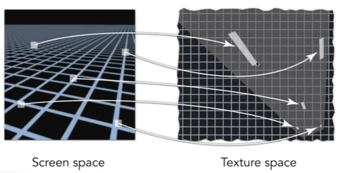 - Advantages:
Improves texture sharpness when viewed at oblique angles. - Disadvantages:
Adds computational overhead. - Ripmaps and summed area tables
- Can look up axis-alignedrectangular zones.
- Diagonal footprint is still a problem.
- EWA filtering
- Use multiple lookups
- Weighted average
- Mipmap hierarchy still helps
- Can handle irregular footprints
- Description:
Practical use of texture
In modern GPUs, texture = memory + range query (filtering)
- General method to bring data to fragment calculationsMany applications
Many applications:
- Environment lighting (environment map: spherical map - record environment light in a sphere, cube map)
- Store microgeometry
- Procedural textures
- Solid modeling
- Store precomputed shading
- Volume rendering
- …
Bump mapping
-
Textures doesn’t have to only represent colors
-
What if it stores the height / normal?
-
Bump/normal mapping (凹凸/法线贴图)
-
Fake the detailed geometry
-
As the figure below shows, we didn’t change the geometry itself, instead we use some fake normals to create illumination changes, so that it looks like there are a lot of bumps.
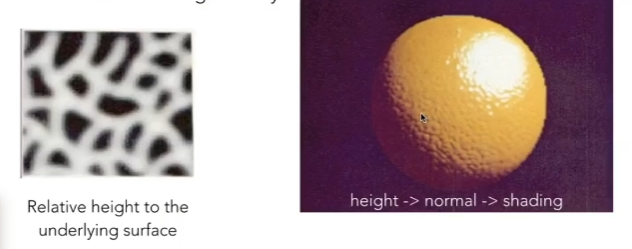 -
Adding surface detail without adding more triangles
-
Perturb (扰动) surface normal per pixel (for shading computations only)
-
“Height shift” per texel defined by a texture
How to modify normal vector?
-
How to perturb the normal (flatland)
- First obtain the tangent line here (1, dp), and the tangent line is rotated 90° to obtain the normal.
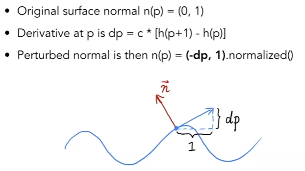
- First obtain the tangent line here (1, dp), and the tangent line is rotated 90° to obtain the normal.
-
How to perturb the normal (3d)
- Two tangents are computed by moving a point one unit in each of the two directions x and y. Subsequently, the two tangents form a plane, which is cross-multiplied to obtain the new normal vector.
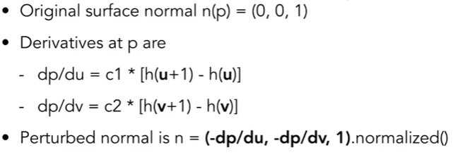
- Two tangents are computed by moving a point one unit in each of the two directions x and y. Subsequently, the two tangents form a plane, which is cross-multiplied to obtain the new normal vector.
Note that the above methods are in local coordinates, so that the original normal is (0,1) or (0,0,1). We can calculate the perturbed normal in this local coordinates and convert it to world coordinate space later.
Displacement mapping (位移贴图)
- a more advanced approach
- Uses the same texture as in bumping mapping
- Actually moves the vertices
Unlike bump mapping, which only simulates surface detail by modifying how light interacts with it, displacement mapping alters the underlying surface geometry itself. For each point (vertex) on the surface, the displacement map is sampled, and the vertex’s position is moved (displaced) along the surface normal by an amount proportional to the map’s value.
3D Procedural Noise + Solid Modeling
Procedural noise is a mathematical method for generating pseudo-random patterns in 3D space that can be used to create natural effects like wood grain, marble, clouds, and terrain. Solid modeling is the representation of 3D objects with full volumetric and geometric information. It goes beyond surface models (which only represent the shell) to include the interior structure of objects.
n solid modeling, 3D procedural noise is often used as a modifier to shape or texture the solid object. For instance:
- Adding procedural noise to a sphere to create a bumpy or irregular surface.
- Using noise to carve out caves or tunnels in a volumetric model of a terrain.